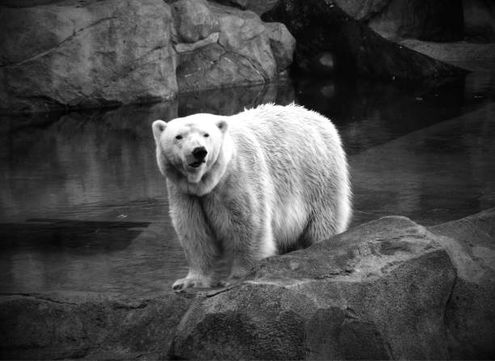

The environmental effects of climate change are broad and far-reaching, affecting oceans, ice, and weather. Changes may occur gradually or rapidly. Evidence for these effects comes from studying climate change in the past, from modelling, and from modern observations. Since the 1950s, droughts and heat waves have appeared simultaneously with increasing frequency. Extremely wet or dry events within the monsoon period have increased in India and East Asia. The rainfall rate and intensity of hurricanes and typhoons is likely increasing, and the geographic range likely expanding poleward in response to climate warming. Frequency of tropical cyclones has not increased as a result of climate change. Historical sea level reconstruction and projections up to 2100 published in 2017 by the U.S. Global Change Research Program Global sea level is rising as a consequence of glacial melt, melt of the ice sheets in Greenland and Antarctica, and thermal expansion. Between 1993 and 2020, the rise increased over time, averaging 3.3 ± 0.3 mm per year. Over the 21st century, the IPCC projects that in a very high emissions scenario the sea level could rise by 61–110 cm. Increased ocean warmth is undermining and threatening to unplug Antarctic glacier outlets, risking a large melt of the ice sheet and the possibility of a 2-meter sea level rise by 2100 under high emissions. Climate change has led to decades of shrinking and thinning of the Arctic sea ice. While ice-free summers are expected to be rare at 1.5 °C degrees of warming, they are set to occur once every three to ten years at a warming level of 2 °C. Higher atmospheric CO2 concentrations have led to changes in ocean chemistry. An increase in dissolved CO2 is causing oceans to acidify. In addition, oxygen levels are decreasing as oxygen is less soluble in warmer water. Dead zones in the ocean, regions with very little oxygen, are expanding too.
Greater degrees of global warming increase the risk of passing through ‘tipping points’—thresholds beyond which certain impacts can no longer be avoided even if temperatures are reduced. An example is the collapse of West Antarctic and Greenland ice sheets, where a temperature rise of 1.5 to 2 °C may commit the ice sheets to melt, although the time scale of melt is uncertain and depends on future warming. Some large-scale changes could occur over a short time period, such as a shutdown of certain ocean currents like the Atlantic Meridional Overturning Circulation (AMOC). Tipping points can also include irreversible damage to ecosystems like the Amazon rainforest and coral reefs. The long-term effects of climate change on oceans include further ice melt, ocean warming, sea level rise, and ocean acidification. On the timescale of centuries to millennia, the magnitude of climate change will be determined primarily by anthropogenic CO2 emissions. This is due to CO2's long atmospheric lifetime. Oceanic CO2 uptake is slow enough that ocean acidification will continue for hundreds to thousands of years. These emissions are estimated to have prolonged the current interglacial period by at least 100,000 years. Sea level rise will continue over many centuries, with an estimated rise of 2.3 metres per degree Celsius (4.2 ft/°F) after 2000 years.
 Recent warming has driven many terrestrial and freshwater species poleward and towards higher altitudes. Higher atmospheric CO2 levels and an extended growing season have resulted in global greening. However, heatwaves and drought have reduced ecosystem productivity in some regions. The future balance of these opposing effects is unclear. Climate change has contributed to the expansion of drier climate zones, such as the expansion of deserts in the subtropics. The size and speed of global warming is making abrupt changes in ecosystems more likely. Overall, it is expected that climate change will result in the extinction of many species. The oceans have heated more slowly than the land, but plants and animals in the ocean have migrated towards the colder poles faster than species on land. Just as on land, heat waves in the ocean occur more frequently due to climate change, harming a wide range of organisms such as corals, kelp, and seabirds.Ocean acidification makes it harder for marine calcifying organisms such as mussels, barnacles and corals to produce shells and skeletons; and heatwaves have bleached coral reefs. Harmful algal blooms enhanced by climate change and eutrophication lower oxygen levels, disrupt food webs and cause great loss of marine life. Coastal ecosystems are under particular stress. Almost half of global wetlands have disappeared due to climate change and other human impacts.
The effects of climate change are impacting humans everywhere in the world. Impacts can now be observed on all continents and ocean regions, with low-latitude, less developed areas facing the greatest risk. Continued warming has potentially “severe, pervasive and irreversible impacts” for people and ecosystems. The risks are unevenly distributed, but are generally greater for disadvantaged people in developing and developed countries.